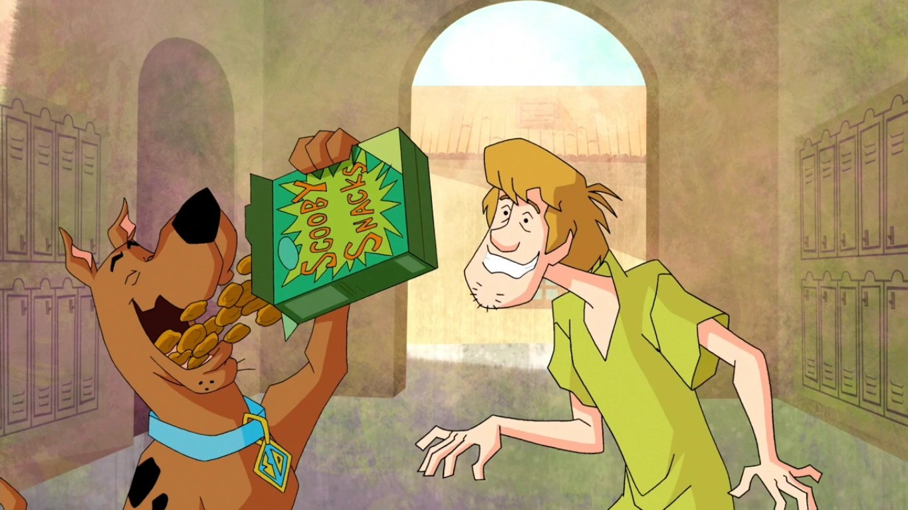

Scooby Snacks!!!

The only way to bribe Shaggy and Scooby when the gang needs some extra encouragement! Scooby Snacks!
The Scooby Snacks biscuits can be eaten by both humans and dogs so i don't see why extraterrestrials couldn't eat them.
These tasty biscuits are both easy to make and very, very... DELICIOUS
Ingredients
- 2 1/2 cups whole wheat organic flour
- 1 egg
- 1 teaspoon baking powder
- 1 cup water
- 2 tablespoons honey
- 1 cup peanut butter
- 1/4 teaspoon vanilla extract
Mixing Instructions
- In a mixing bowl, mix together the flour, baking powder and the egg
- Now add the rest of the ingredients to the bowl, the water, honey, peanut butter and vanilla extract and mix together everything
until it is well combined, to make this step easier you can use a electric mixer.
- It is now time to roll the dough so spread some flower on the table and rolling pin and roll the dough until the thickness is
half a centimeter.(This isn't exact, just a rule of thumb when making these)
- (Optional) Cut the dough with a circle cookie cutter that has roughly a 5 cm diameter
- place the cookies on a piece of baking sheet that has parchment paper on it with a little space between every cookie
- Now bake the cookies on 175 celsius for 19 minutes and viola! your scooby snacks are done!
Main Page